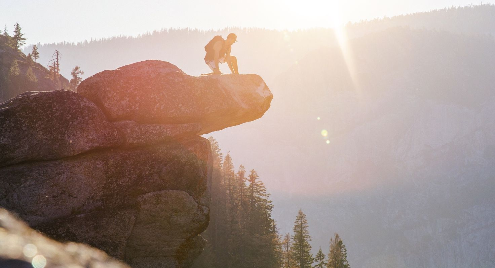
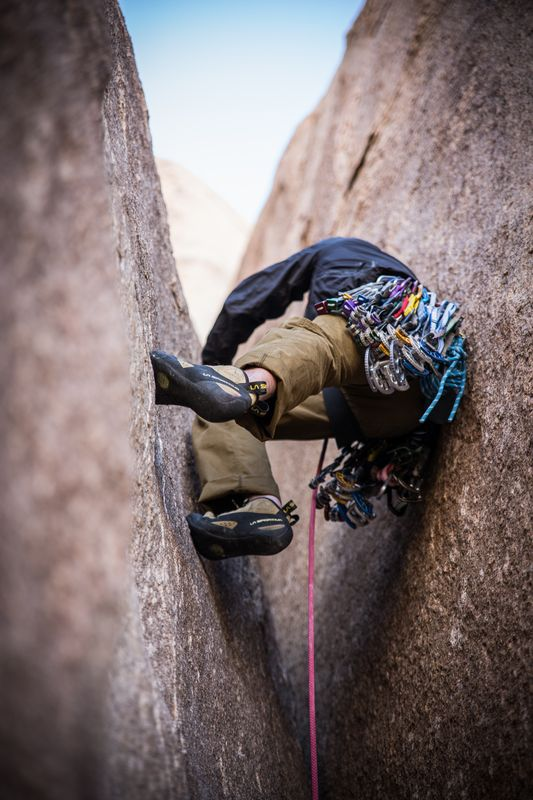

ABOUT
The park, which is managed by the National Park Service, covers an area of 747,956 acres (1,168.681 sq mi; 3,026.87 sq km) and reaches across the western slopes of the Sierra Nevada mountain range. On average, about 4 million people visit Yosemite each year, and most spend the majority of their time in the seven square miles (18 sq km) of Yosemite Valley.The park set a visitation record in 2016, surpassing 5 million visitors for the first time in its history.
HISTORY
Designated a World Heritage Site in 1984, Yosemite is internationally recognized for its granite cliffs, waterfalls, clear streams, giant sequoia groves, lakes, mountains, glaciers, and biological diversity. Almost 95% of the park is designated wilderness. Yosemite was central to the development of the national park idea. First, Galen Clark and others lobbied to protect Yosemite Valley from development, ultimately leading to President Abraham Lincoln's signing the Yosemite Grant in 1864. Later, John Muir led a successful movement to establish a larger national park encompassing not just the valley, but surrounding mountains and forests as well — paving the way for the United States national park system.
ACTIVITIES
Yosemite Valley is open year-round and numerous activities are available through the National Park Service, Yosemite Conservancy, and Delaware North at Yosemite, including nature walks, photography and art classes, stargazing programs, tours, bike rentals, rafting, mule and horseback rides, and rock climbing classes. Many people enjoy short walks and longer hikes to waterfalls in Yosemite Valley, or walks among giant sequoias in the Mariposa, Tuolumne, or Merced Groves. Others like to drive or take a tour bus to Glacier Point (Summer - Fall) to see a spectacular view of Yosemite Valley and the high country, or drive along the scenic Tioga Road to Tuolumne Meadows (May–October) and go for a walk or hike.
HIKING
Over 800 miles (1,300 km) of trails are available to hikers — anything from the easy stroll, to the grueling hikes up several park mountains, to multiple-day backpack trips.
“In every walk with nature one receives far more than he seeks” — John Muir
The park can be divided into 5 sections for the day-user—Yosemite Valley, Wawona/Mariposa Grove/Glacier Point, Tuolumne Meadows, Hetch Hetchy, and Crane Flat/White Wolf. Numerous books describe park trails, and free information is available from the Park Service in Yosemite. Park rangers encourage visitors to experience portions of the park in addition to Yosemite Valley.
Between late spring and early fall, much of the park can be accessed for multiple-day backpacking trips. All overnight trips into the back country require a wilderness permit and most require approved bear-resistant food storage.
CLIMBING
Rock climbing is an important part of Yosemite. Camp 4, a walk-in campground in Yosemite Valley, was instrumental in the development of rock climbing as a sport, and is listed on the National Register of Historic Places. Climbers can generally be spotted in the snow-free months on anything from ten-foot-high (3 m) boulders to the 3,300-foot (1.0 km) face of El Capitan. Classes on rock climbing are offered by numerous groups.
WINTER ACTIVITIES
Yosemite Valley is open all year, although some roads within the park close in winter. Downhill skiing is available at the Badger Pass Ski Area— the oldest downhill skiing area in California, offering downhill skiing from mid-December through early April. Much of the park is open to cross-country skiing and snowshoeing, with several backcountry ski huts open for use. Wilderness permits are required for backcountry overnight ski trips.
OTHER ACTIVITIES
Bicycle rentals are available in Yosemite Valley spring through fall. Over 12 miles (19 km) of paved bike paths are available in Yosemite Valley. In addition, bicyclists can ride on regular roads. Helmets are required by law for children under 18 years of age. Off-trail riding and mountain biking are not permitted in Yosemite National Park.
Water activities are plentiful during warmer months. Rafting can be done through the Yosemite Valley on the Merced River. There are also swimming pools available at Yosemite Lodge and Curry Village.